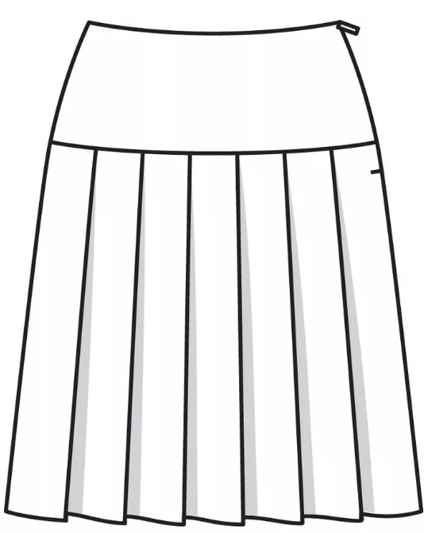

Проектирование конструкций поясных изделий женской одежды
#Конструирование, моделирование и технология изготовления изделий легкой промышленности
Динамическая инфографика
Конструктивное моделирование поясной одежды. Основные понятия.
Основные понятия.
Базовая конструкция одежды – изображение основных деталей определенного вида и силуэта одежды с учетом прибавок на свободу, толщину пакета материалов и технологических припусков на влажно-тепловуюобработку и термодублирование, служит для разработки модельных конструкций.
Поясная одежда – одежда покрывающая нижнюю часть туловища и ноги частично или полностью, опирающаяся на тазобедренный пояс.
Вытачка – стачной участок ткани в изделии, служащий для создания объемной формы детали.
Кокетка – верхняя, отрезная часть деталей изделия, полочки, спинки, юбки, брюк.
Рельефы – это резные линии, которые делят основное лекало на части и с помощью которых создается форма изделия, облегающая фигуру.
Драпировка – это создание нужной формы участка изделия группой мягких складок.
Конструктивные линии – линии, создающие основную форму деталей, и линии соединяющие составные детали одежды: боковые, передние, талиевые, плечевые швы, швы соединяющие стыки, рукава, вытачки.
Декоративные линии – это линии, существующие исключительно для декоративных целей. К декоративным относятся линии различных отделок: защипы, складки, сборки, вышивки, отделочные швы.
Моделирование – это изменение линий основной конструкции в соответствии с выбранной моделью.
Этапы конструктивного моделирования
Этапы конструктивного моделирования:
- анализ фотографии или эскиза проектируемой модели,
- выбор подходящей базовой конструкции ,
- изменение базовой конструкции, путем переноса вытачек, членения деталей, нанесение на чертеж конструктивных линий,
- проверка разработанной модельной конструкции.
Анализ проектируемой модели (по ее эскизу или фотографии).
Проектируемая модель может быть представлена фотографией, эскизом или готовым изделием. При изучении модели необходимо выявить ее особенности и отклонения от базовой конструкции. Анализ модели начинают с разметки на эскизе центральной линии и линий основных конструктивных уровней (талии, бедер, колена, низа изделия). При работе с графическим изображением модели определяют его масштаб: продольный и поперечный. Для установления продольного масштаба можно использовать размер высоты головы. Поперечный масштаб определяют через стандартные размеры деталей. Расчеты производятся по формулам:
М=Р н /Рр; Рн=Рр М,
где М –масштаб; Р н – размер детали в натуральную величину; Р р – размер детали на рисунке модели.
При анализе эскиза модели объектами изучения являются: уровень линии талии и низа изделия, расположение вытачек и рельефов, петель и пуговиц, карманов, кокеток, хлястиков и т.д. Размеры и расположение конструктивных элементов на рисунке моделей определяют, ориентируясь на положение вспомогательных линий, используя вычисленный масштаб эскиза. Определение прибавок на свободное облегание и их распределение по ширине изделия выполняют ориентировочно с учетом принятого модного направления и средних значений прибавок для изделий данного силуэта.
Выбор базовой конструкции для проектируемого изделия
При выборе подходящей базовой конструкции для преобразования ее в конструкцию заданной модели необходимо определить: вид одежды и ткани, силуэт, размер, рост и полнотную группу, декоративно- конструктивные прибавки проектируемого изделия.
Формообразование одежды и принцип преобразования базовой конструкции в модельную.
Формообразование кроеной одежды- это процесс создания объемных форм одежды за счет способности ее материалов под действием деформаций изгиба, растяжения и смятия создавать пространственную форму. Основными факторами формообразования в конструкции одежды являются швы, вытачки, влажно-тепловая обработка, формовочные свойства материалов и различные их комбинации.
Выделяют следующие 3 вида разработки модельных конструкций: без изменения силуэтной формы базовой конструкции, с изменением силуэтной формы базовой конструкции, с изменением объёмной формы базовой конструкции.
Конструктивное моделирование без изменения силуэта базовой конструкции.
Самый простой вид конструктивного моделирования- когда новая модель разрабатывается без изменения силуэтной формы базовой конструкции. Преобразованию подвергаются форма карманов и других мелких деталей, проектируются складки и кокетки, вводятся дополнительные членения, меняется длина изделия, используется простой перевод вытачек.
Моделирование поясной одежды осуществляют на основе апробированной базовой конструкции прямой юбки или брюк классической формы. Преобразования проводят путем нанесения на детали базовой основы новых конструктивных линий. Кокетки в поясной одежде может иметь различную форму и размер. При ее проектировании вытачку по линии талии желательно перевести в линию среза кокетки. Поэтому ее лучше проводить через вершины вытачек. Если линия кокетки расположена выше концов вытачек, то их верхнюю часть закрывают, а оставшуюся совмещают с рельефами, складками, и другими конструктивными линиями. Если кокетка расположена ниже вытачек, то их либо сохраняют, либо удлиняют до линии отреза.

Конструктивное моделирование с изменением силуэта базовой конструкции.
При разработке новой модели изменяется силуэт базовой конструкции. При изменении силуэта используются приемы конического и параллельного расширения деталей, видоизменяются контуры деталей.

Параллельное и коническое расширение деталей поясной одежды может осуществляться на различных уровнях талии, бедер, коленей и ниже.
Параллельное расширение при проектировании юбок и брюк используется в основном для получения сборок и мягких складок (рис.1).
Коническое расширение деталей заднего и переднего полотнищ юбки позволяет получить конструкцию малый клеш, «полусолнце», «солнце» (рис.2). Расширение деталей юбки и брюк может быть параллельно-коническим (рис.3). В детали с вытачками условное ее рассечение для расширения выполняют через концы вытачек; при этом после разведения полос вытачки частично или полностью закрываются (рис.4).
Существует два способа перевода вытачек – графический и способ шаблона. Графический способ выполняют методом дуг и засечек, но он достаточно трудоемкий, поэтому при моделировании в основном используют перевод вытачек способом шаблона.
Чаще всего в поясной одежде вытачки переводят в фасонные линии (кокетка, драпировка). Если силуэт планируется облегающий, то совсем избавиться от вытачек не представляется возможным.
Для конического заужения деталей полосы рассеченных деталей заводят друг на друга, контролируя ширину изделия на уровне линии бедер. При заужении деталей книзу и сохранении их ширины на заданном уровне увеличиваются растворы прежних вытачек и образуются новые, для образования мягких складок и драпировок (рис.5).
Рис.1
 Рис.2
Рис.2
Рис.3
Рис.4
Рис.5
При проектировании поясной одежды с рельефами, кокетками необходимо ставить контрольные знаки (надсечки) на совмещение с деталью. Для изделий со складками контрольные знаки ставят для обозначения глубины складки.
Конструктивное моделирование с изменением объемной формы базовой конструкции.
При конструктивном моделировании конструкции поясной одежды с подрезами и драпировкой изменяется объемная форма конструкции.
При проектировании драпировок сначала выполняются все предварительные преобразования. Вытачки деталей базовой конструкции переводят максимально в модельные линии членения. После этого намечают расположение линий драпировки на чертеже базовой конструкции, а далее переводят вытачки в драпировку или подрез. Количество фалд зависит от того, на какое расстояние были разведены линии членения. При необходимости можно выполнить дополнительное расширение деталей.
При проектировании изделий с драпировкой, необходимо на лекала наносить контрольные надсечки, которые определяют глубину складок.
Практическое занятие.
1 Для выполнения практического задания вам понадобятся: базовая конструкция женской юбки (брюк), ножницы, малярный скотч (обычный скотч или клей), линейка, ножницы.
2 Общий алгоритм выполнения конструктивного моделирования при коническом или параллельном расширении деталей:
-проанализируйте эскиз модели;
-наметьте на шаблоне детали место рассечения для дальнейшего разведения ее частей;
-в детали с вытачками условное ее рассечение для расширения выполняют через концы вытачек, при этом после разведения полос вытачки частично или полностью закрываются;
-рассеките деталь по намеченной линии;
-разведите получившиеся части деталей параллельно или конически (по модели);
-закрепите детали скотчем.
3 Пример выполнения параллельного расширения деталей юбки.
Описание модели: Юбка на кокетке, длиной до уровня колена. На нижней части юбки заложены односторонние складки.
Моделирование выполняется на базовой конструкции прямой юбки.
-Определяем длину изделия.
-Намечаем ширину и форму кокетки.
-Разрезаем деталь по намеченной линии.
-Талиевую вытачку на кокетке закрываем, скрепляя скотчем.
-Шаблон нижней части юбки делим на количество складок и параллельно разводим на желаемую глубину складки.
-Закрепляем шаблоны скотчем.

4 Пример выполнения конического расширения и заужения на примере юбки «тюльпан».
Описание модели: Юбка длиной до уровня колена, зауженная к низу, со сборкой по талии и с дополнительным объемом в области бедер.
Моделирование выполняется на базовой конструкции прямой юбки.
-Определяем длину изделия.
-Намечаем вертикальные линии, по которым деталь передней (задней) половинки юбки будет разрезаться.
-Разрезаем детали юбки по намеченным линиям.
-Нижние края шаблона юбки слегка заводим друг на друга, создавая заужение юбки внизу (коническое заужение).
-Верхние срезы разводим (коническое расширение) на ширину желаемой сборки, создавая тем самым дополнительный объем в области талии и бедер.
-Закрепляем шаблоны скотчем.